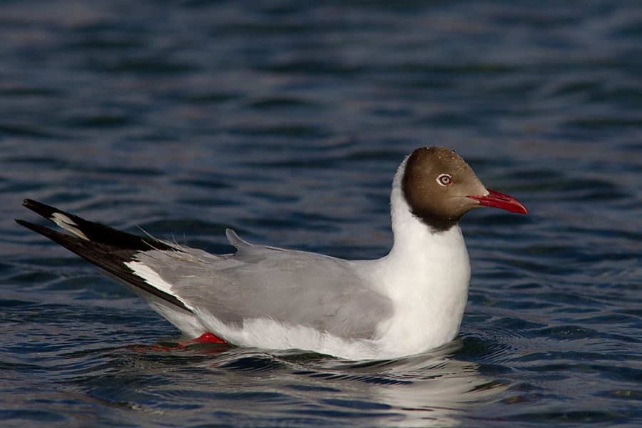

ब्राउन-हेडेड गलBrown-headed Gull
Chroicocephalus brunnicephalus · Laridae · BRD-0265

- Scientific name वैज्ञानिक नाम
- Chroicocephalus brunnicephalus (Jerdon, 1846)
- Family कुल
- Laridae
- Hindi हिंदी
- ब्राउन-हेडेड गल
- Local names स्थानीय नाम
- brown-headed gull, brown headed gull, gull
- Status here यहाँ की स्थिति
- native
- Movement आवागमन
- Winter visitor
- Known from कहाँ दर्ज
- Others have published records from the Basti–Ayodhya districts बस्ती–अयोध्या के ज़िलों से दूसरों के प्रकाशित अभिलेख
- IUCN IUCN
- LC
- Review समीक्षा
- audited and independently read
When to look कब देखें
Winter visitor शीतकालीन प्रवासी. Expected mainly in October, November, December, January, February, March, April. मुख्यतः अक्टूबर, नवंबर, दिसंबर, जनवरी, फ़रवरी, मार्च, अप्रैल में अपेक्षित।
Arrives October–November from the Caspian and Central Asian breeding grounds; departs by March–April. Handbook source: Ali & Ripley (1968). All migrants and visitors →
Tell it apart from इनसे अलग पहचानें
ब्राउन-हेडेड गल / Brown-headed Gull
Chroicocephalus brunnicephalus (Jerdon, 1846) — Laridae
ब्राउन-हेडेड गल — ठंड के मौसम में मध्य एशिया से आने वाली गुलाब, जो बड़ी झीलों और नदियों में झुंड बनाकर रहती है। ये सफेद पंख वाली, भूरे सिर वाली गुलाब है जो अक्टूबर से अप्रैल तक देखी जाती है। पानी पर तैरती है और कीड़े तथा खाने की चीजें खोजती है।
Quick Identification त्वरित पहचान
| Feature | Description |
|---|---|
| Size | 41–43 cm; medium gull |
| Breeding plumage | Dark brown head; white body; grey wings |
| Non-breeding plumage | White head with brown earmarks; same body pattern |
| Wings | White and grey with black tips (primaries) |
| Bill | Medium length, red or orange; slightly hooked tip |
| Legs | Red or orange-red |
| Tail | White |
| Behaviour | Highly gregarious; rests on water; forms feeding flocks |
Field tip: A medium-sized white gull with reddish bill and legs, seen in winter flocks on large water bodies. In winter, look for the distinctive brown or grey ear patch on an otherwise white head. Often seen standing on muddy banks or resting on open water. Very vocal; utters loud mewing calls in flocks.
हिंदी — कैसे पहचानें:
सफेद और भूरे रंग की गुलाब।
सर्दी में बड़ी झीलों पर झुंड में दिखता है।
लाल या नारंगी चोंच और पैर।
बहुत तेज आवाज़ करती है।
Morphology आकारिकी
Biometrics (winter birds in eastern UP):
| Measurement | Range |
|---|---|
| Total length | 410–430 mm |
| Wing (flattened chord) | 300–320 mm |
| Tail | 120–140 mm |
| Bill | 38–44 mm |
| Tarsus | 38–45 mm |
| Weight | 280–330 g |
Size: 41–43 cm long; wingspan 105–115 cm. A medium-sized gull.
Breeding plumage (not seen in UP): Head dark chocolate brown; back pale grey; wings grey with black primaries; rest of plumage white. Bright red bill and orange-red legs.
Non-breeding plumage (winter, eastern UP): Head white with brown or dusky ear patch and loral area; back pale grey; wings patterned as breeding. Bill red but duller; legs orange.
Wings: Pale grey coverts contrasting with black or dark-grey primaries, visible in flight as a two-tone pattern.
Bill: Medium length, slightly hooked at tip; red (breeding) or orange (non-breeding).
Legs and feet: Red or orange, relatively long.
Eyes: Dark.
Sexes: Monomorphic.
Juveniles: Mottled brown-grey above; dusky head and neck; whitish below; pale bill and legs.
Vocalisations. Call repertoire:
- Contact call: Loud, nasal kaw-kaw-kaw, repeated while resting or flying.
- Alarm call: Harsh, sharp kyarr-kyarr, given when disturbed.
- Food call: Soft, grunting contact notes between individuals.
हिंदी: तेज आवाज़। "काव-काव" करता है।
Behaviour & Ecology व्यवहार और पारिस्थितिकी
Gregarious and highly social. Brown-headed Gulls are strongly gregarious, especially in winter when they form flocks of 50–500 or more birds. Roost communally on open water; spend days on muddy banks, islands, or floating vegetation.
Foraging behaviour: Omnivorous and opportunistic. Feed on small fish, aquatic insects, crustaceans, and grain spilled in rice paddies. Often scavenge around human settlements and markets. Pick insects from water surface and shallow diving.
Daily activity: Crepuscular (most active at dawn and dusk) but also forage during the day. Nocturnal roosts on large, open water bodies.
Flight: Buoyant, less vigorous than larger gulls. Often drift in flocks on water.
Predators: Large raptors including (rare). Chicks vulnerable to monitor lizards and corvids.
Parasites: Intestinal and blood parasites; unquantified locally.
हिंदी: बहुत झुंड प्रिय। पानी पर तैरता है। सब कुछ खाता है — मछली, कीड़े, चावल।
Life Cycle / Phenology जीवन चक्र
| Event | Timing |
|---|---|
| Arrival (eastern UP) | October–November |
| Peak abundance | December–February |
| Wintering behaviour | Roosting, feeding flocks |
| Departure | March–April |
| Breeding grounds | Caspian region, Central Asia (April–July) |
| Return migration | August–September |
हिंदी: अक्टूबर में आता है, अप्रैल तक रहता है। सर्दियों में झुंड में रहता है।
Host Plants or Prey आहार
| Food Type | Examples | Feeding Behaviour |
|---|---|---|
| Small fish | Silversides, small carps | Pick from surface; shallow dives |
| Aquatic insects | Dragonfly nymphs, water boatmen | Glean from surface and vegetation |
| Crustaceans | Small shrimp, ostracods | Dabble in shallow water |
| Grain | Rice from paddies and markets | Glean on land |
| Carrion | Fish waste, dead animals | Scavenge around settlements |
हिंदी: छोटी मछली, कीड़े और अनाज खाता है। बाज़ारों के पास कूड़े में खोजता है।
Predators / Natural Enemies शत्रु
- Avian predators: (rare visitor), Peregrine Falcon
- Mammalian predators: Wild boar, domestic dog
- At nest/roost: Corvids, monitor lizard
- Parasites: Helminths, blood parasites
हिंदी: बड़ी चिड़ियाँ शिकार करती हैं। अंडों को कौवे खाते हैं।
Agricultural / Human Relevance कृषि प्रासंगिकता
Historical hunting. Brown-headed Gull was historically hunted as a game bird across much of its range. In eastern UP, it is mentioned in hunting records of the Mughal period. Hunting is now prohibited under the Wildlife (Protection) Act 1972.
Damage to rice paddies. Large flocks may forage in rice paddies and occasionally glean sprouting grain, but overall damage is minimal.
Scavenging value. In traditional settings, large flocks consume dead fish and organic waste around human settlements, providing sanitation services.
Cultural significance: Named chandni (moonlit) in local speech, referring to the bird's pale plumage. Featured in classical Sanskrit and Persian hunting texts.
हिंदी: कानून से पूरी तरह सुरक्षित है। इसका शिकार करना गैरकानूनी है। बाज़ारों के पास कचरे की सफ़ाई करता है।
Expected Locally स्थानीय रूप से अपेक्षित
Not a field record. Written from published accounts for eastern Uttar Pradesh. No confirmed local sighting yet — if you have seen it, that is what the atlas needs.
अभी तक स्थानीय पुष्टि नहीं। यह विवरण प्रकाशित स्रोतों से है, किसी अवलोकन से नहीं।
This species is NOT a field record. The distribution below is based on published sources describing where Brown-headed Gull should be looked for in the Basti–Ayodhya region.
Winter range: Expected in eastern Uttar Pradesh from October to April. Large lakes and reservoirs, the Ghaghra and Rapti river systems, and associated floodplain water bodies are prime habitats. Flocks visit paddy fields and water margins.
Habitat preference: Shallow, open water bodies with adjacent muddy banks for resting. Large reservoir systems (such as Ghat Lakes) attract the largest flocks.
Peak occurrence: December–February, when Central Asian populations move to southern wintering grounds.
GBIF records: GBIF holds published records from the wider Awadh–Purvanchal plain, none yet from Basti–Ayodhya.
What a first record would be: A photograph showing the gull clearly (head markings and bill colour distinct) in a specific location (GPS and date), submitted through the About page. Flocks are easy to photograph on open water.
हिंदी: यह पक्षी स्थानीय रूप से अपेक्षित है, न कि देखे गए बतौर प्रेक्षण। अक्टूबर से अप्रैल तक बड़ी झीलों पर झुंड में देखे जाते हैं। पहला रिकॉर्ड के लिए स्पष्ट फोटोग्राफ और तारीख चाहिए।
Distribution वितरण
Global range: Central Asia, Caspian region, and southern Asia from Turkey to the Philippines. Breeds in the Caspian and Aral Sea regions; winters from the Persian Gulf to the Indian subcontinent.
In India: Widely distributed as a winter visitor on all major river systems, lakes, and coastal wetlands, October to April.
In Uttar Pradesh: Common winter visitor throughout the state, particularly in the Gangetic plain.
In Basti district / eastern UP: Regular and abundant winter visitor along the Ghaghra and Rapti river systems, major tanks and reservoirs, and floodplain lakes.
Research Questions शोध प्रश्न
- What is the total winter population of Brown-headed Gull in the Ghaghra-Rapti system, and how has it changed over the last two decades?
- Do different flocks from eastern UP have different breeding grounds, and can this be determined from wing-tagging?
- How does the diet composition of Brown-headed Gull vary seasonally between early winter (October–November) and late winter (February–March) in rice-growing areas?
- क्या इस गुलाब की संख्या जलाशयों के पानी के स्तर से संबंधित है? (Is gull population related to reservoir water levels?)
- What is the annual survival rate and return rate of individuals tagged in eastern UP? (A child can observe marked individuals across winters.)
- क्या जलवायु परिवर्तन इस चिड़िया के आगमन की तारीख को प्रभावित कर रहा है? (Is climate change affecting gull arrival timing?)
Similar Species मिलती-जुलती प्रजातियाँ
| Species | Key Difference | हिंदी | Field Rule | |
|---|---|---|---|---|
| [[black_headed_gull\ | Black-headed Gull]] (Larus ridibundus) | Much darker head (black in breeding); slightly larger | काली गुलाब | Black-headed Gull has a solid black head in breeding plumage, never brown. Rare in eastern UP. |
| Pallas's Gull (Ichthyaetus ichthyaetus) | Much larger (58–68 cm); massive bill; white head year-round | बड़ी गुलाब | Pallas's Gull is very large with a huge red bill and white head at all seasons. | |
| Indian Black-headed Gull (extinct locally) | Black head in breeding; now extinct as winter visitor | काली सिर गुलाब | Brown-headed Gull has brown or dusky head patch, never fully black. |
Field rule: A medium-sized white gull with reddish bill and legs, wintering on large water bodies in winter flocks. Brown or dusky head patch on white head is diagnostic for non-breeding Brown-headed Gull.
Taxonomy & Classification वर्गीकरण
Original description. Described by Thomas Jerdon in 1846 in Madras Journal of Literature and Science as Larus brunnicephalus. Type locality: Madras, India.
Subspecies. Monotypic — no subspecies are recognised.
Family and order placement. Order Charadriiformes; family Laridae (gulls, terns, and skimmers). The genus Chroicocephalus contains small to medium gulls with brown heads in breeding plumage.
Phylogenetic notes. Chroicocephalus brunnicephalus is closely related to other Asian Chroicocephalus species, particularly C. saundersi (Saunder's Gull).
IUCN status rationale. Least Concern globally. Populations are stable, and the species is widespread and adaptable to human-modified wetlands. Protected under the Wildlife (Protection) Act 1972. Population trends are not well-documented in India but appear stable.
हिंदी: यह एशिया में पाया जाता है। कानून से पूरी तरह सुरक्षित है।
Photo Gallery फोटो गैलरी
No photos yet — add field photos to media/species/brown_headed_gull/ and run node scripts/sync_photos.js.
Wanted photos:
- Flock resting on open water (winter plumage)
- Close-up of head showing brown ear patch (winter)
- Feeding on muddy banks or in rice paddy
- Flight view showing wing patterns
- Roosting congregations
References संदर्भ
- Jerdon, T.C. (1846). Observations on the birds of southern India. Madras Journal of Literature and Science, 15: 110–136.
- Ali, S. & Ripley, S.D. (1968). Handbook of the Birds of India and Pakistan, Vol. 1 (Divers to Hawks). Oxford University Press, Delhi. Pp. 327–329.
- Grimmett, R., Inskipp, C. & Inskipp, T. (2011). Birds of the Indian Subcontinent: India, Pakistan, Sri Lanka, Bhutan, Bangladesh and Nepal (2nd edn). Oxford University Press & Helm. P. 126.
- Birdlife International (2023). Chroicocephalus brunnicephalus — IUCN Red List assessment. Status: Least Concern.
- GBIF Occurrence Data — Chroicocephalus brunnicephalus, India.
- Rasmussen, P. C. & Anderton, J. C. (2012). Birds of South Asia: The Ripley Guide. 2nd ed. Smithsonian Institution and Lynx Edicions.
Source file: species/fauna/birds/brown_headed_gull.md